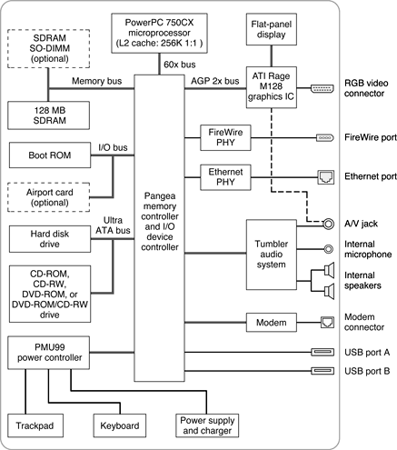

| PATH |

This section is an overview of the major ICs and buses on the computer's main logic board.
Figure 2-1 is a simplified block diagram of the main logic board. The diagram shows the input and output connectors, the main ICs, and the buses that connect them together.
Figure 2-1 Block diagram
The architecture of the iBook computer is designed around the PowerPC G3 microprocessor and a large custom IC: the Pangea memory controller and the I/O device controller. The Pangea IC occupies the center of the block diagram.
The microprocessor is connected to the Pangea IC by a 60x bus with 64 data lines . The Pangea IC has other buses that connect with the Boot ROM, the main system RAM, the graphics IC, and the Ethernet and FireWire PHY ICs. Each of the components listed here is described in one of the following sections. The buses implemented by the Pangea IC are summarized in Table 2-1, which is in the section "Memory and I/O Device Controller".